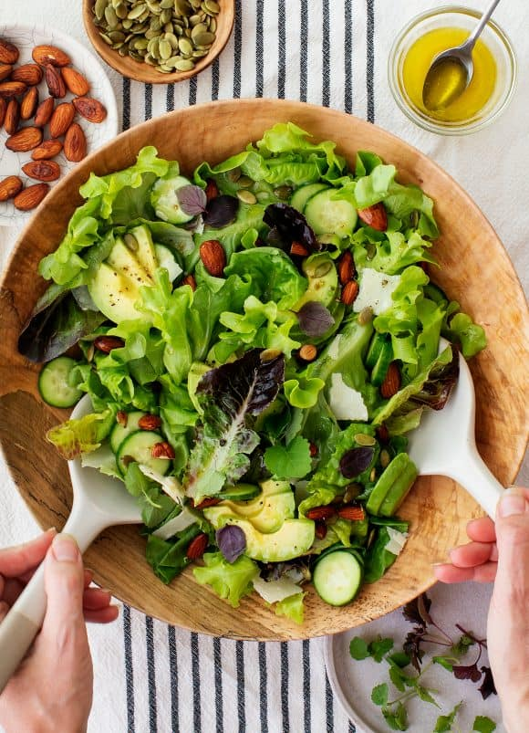

Salad
You'll love taking this Asian slaw to summer picnics or BBQs! It's easy to make ahead, so it's also one of my favorite choices for a quick weekday lunch. Vegan and gluten-free.
Ingredients
- 6 to 7 cups shredded red and/or green cabbage
- Mix of peppers
- 2 scallions, chopped
- ½ cup chopped cilantro, including stems
- ½ cup fresh basil, Thai basil, and/or mint
- ¼ cup toasted peanuts, pepitas, and/or sesame seeds
Steps
- Make the dressing: In a small bowl, whisk together the cashew butter, miso paste, lime juice, sesame oil, and ginger. Whisk in enough water to create a drizzable consistency. Set aside.
- In a dry cast-iron skillet over medium heat, char the peppers whole, rotating until the edges have a little char, about 2 minutes per side. Remove. When cool to the touch, slice in half lengthwise, remove the stem, ribbing, and seeds and slice horizontally into thin strips.
- In a large bowl, combine the cabbage, peppers, scallions, cilantro, basil, chiles, and ¾ of the dressing. Toss until combined. Add the remaining dressing, if desired, and season to taste with a few pinches of sea salt. Serve topped with the toasted nuts, seeds, and sliced peaches.